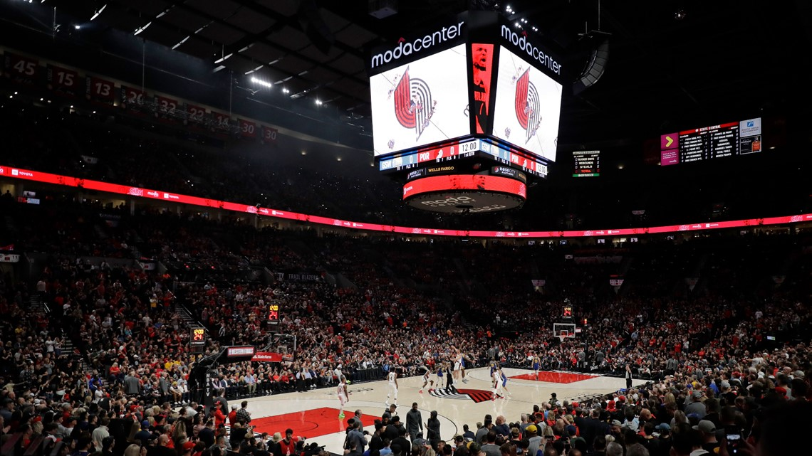

Portland Trail Blazers - Fundado em 1970, os Portland Trail Blazers têm uma história rica na NBA, destacando-se com seu único título da NBA conquistado em 1977. Com ícones como Bill Walton e Clyde Drexler, a franquia se estabeleceu como uma das grandes da conferência oeste. Embora os Blazers não tenham conquistado mais campeonatos desde 1977, têm se mantido competitivos ao longo dos anos, com figuras como Damian Lillard liderando o time no século XXI.
Elenco - Damian Lillard (#0), Scoot Henderson (#2), Anfernee Simons (#1), Deandre Ayton (#13), Matisse Thybulle (#21), Jerami Grant (#9), Shaden Sharpe (#17), Malcolm Brogdon (#13).
Títulos NBA - 1 (1977)
Títulos Conferência - 2 (1977, 1990)
Estádio - Moda Center (19.393)
